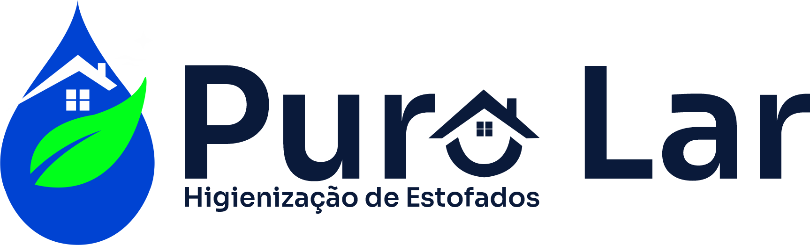
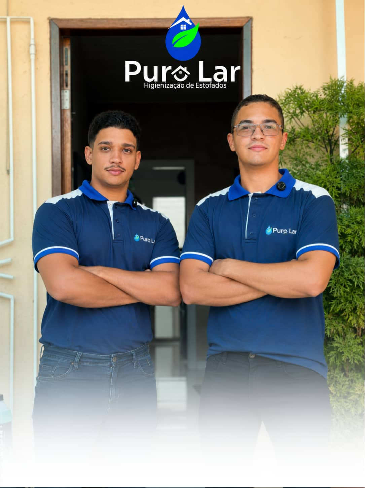
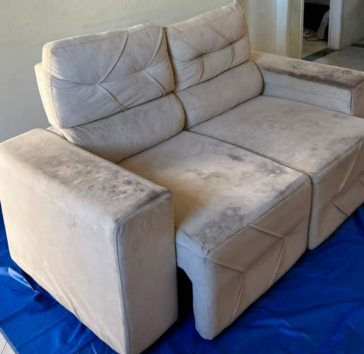
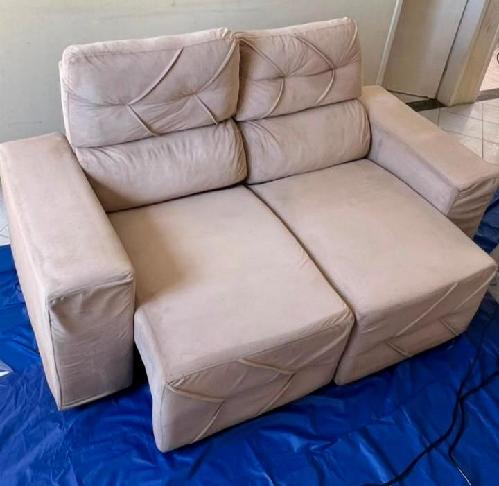
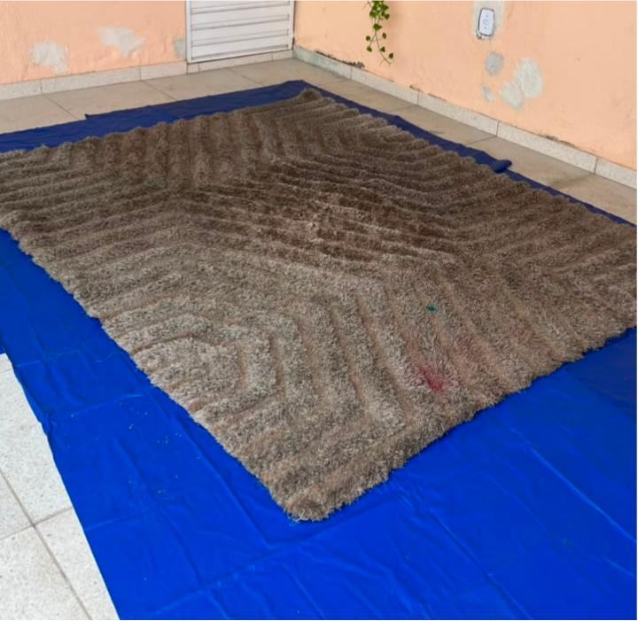
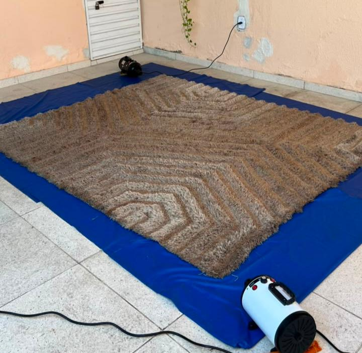
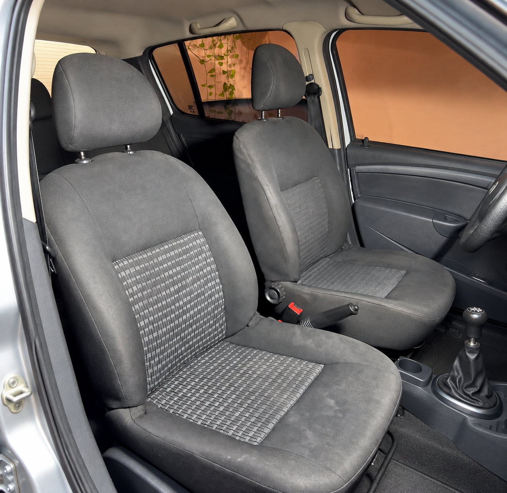
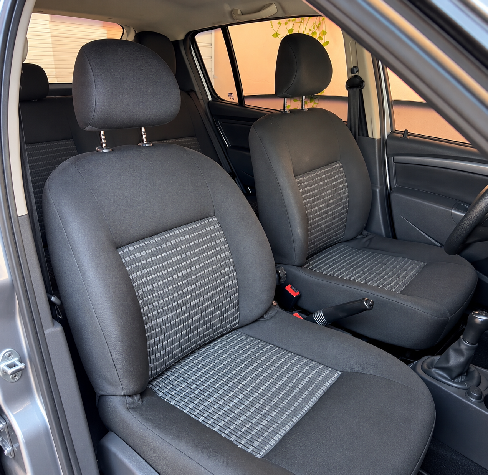

A Puro Lar remove manchas, ácaros, odores e alérgenos de sofás, colchões, cadeiras, tapetes e bancos automotivos com produtos profissionais e seguros para crianças e pets.

Veja a transformação que só a higienização profissional da Puro Lar proporciona.


Sensação de sofá novo que só a Puro Lar realiza.


Eliminação de ácaros e manchas.


Remoção completa de manchas e revitalização de plástico, carro novo novamente.
Higienização especializada para cada tipo de estofado, com técnicas e produtos específicos.
Higienização de estofados de escritório, jantar e área de descanso.
Solicitar orçamentoBancos, teto e carpete do carro com aspecto e cheiro de novo.
Solicitar orçamentoProteção contra liquidos e sujeiras, aumentando a durabilidade do estofado.
Solicitar orçamentoDo orçamento à entrega, tudo pensado para ser rápido e sem complicação.
Você envia fotos do estofado e recebe um orçamento rápido.
Escolhemos juntos o melhor dia e horário para o atendimento.
Nossa equipe realiza a limpeza profunda direto na sua casa.
Em poucas horas seu estofado está limpo, seco e perfumado.
Estofados higienizados
Anos de experiência
Clientes satisfeitos
Atendimento e retorno
A satisfação dos nossos clientes é o nosso maior orgulho.
Reunimos as dúvidas mais comuns dos nossos clientes.
Fale agora mesmo com a nossa equipe e receba um orçamento gratuito em minutos, sem compromisso.